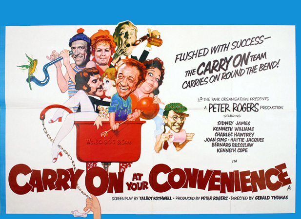
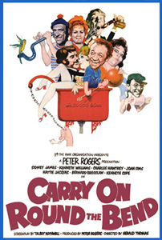

Peter Rogers
Amelia Bayntun
In bathroom ceramics factory W.C. Boggs & Son, the traditionalist owner W.C. Boggs (Kenneth Williams) is having no end of trouble. Bolshy and lazy union representative Vic Spanner (Kenneth Cope) continually stirs up trouble in the works, to the irritation of his co-workers and management. He calls a strike for almost any minor incident – or because he wants time off to attend a local football match. Sid Plummer (Sid James) is the site foreman bridging the gap between workers and management, shrewdly keeping the place going amid the unrest.
Prissy floral-shirt-wearing product designer Charles Coote (Charles Hawtrey) has included a bidet in his latest range of designs, but W.C. objects to the manufacture of such "dubious" items. W.C. will not change his stance even after his son, Lewis Boggs (Richard O'Callaghan), secures a large overseas order for the bidets. It is a deal that could save the struggling firm, which W.C. has to admit is in debt to the banks.
Vic's dim stooge Bernie Hulke (Bernard Bresslaw) provides bumbling assistance in both his union machinations and his attempts to woo Sid's daughter, factory canteen worker Myrtle (Jacki Piper). She is torn between Vic and Lewis Boggs, who is something of a playboy but insists he loves her.
Sid's wife is Beattie (Hattie Jacques), a lazy housewife who does little but fuss over her pet budgie, Joey, which refuses to talk despite her concerted efforts. Their neighbour is Sid's brassy and lascivious co-worker Chloe Moore (Joan Sims). Chloe contends with the endless strikes and with her crude, travelling salesman husband Fred (Bill Maynard), who neglects her and leaves her dissatisfied. Chloe and Sid enjoy a flirtatious relationship and are sorely tempted to stray. Unusually for Sid James, his character is a faithful husband, albeit a cheeky and borderline-lecherous one.
Sid and Beattie find that Joey can correctly predict winners of horseraces – he tweets when the horse's name is read out. Sid bets on Joey's tips and makes several large wins – including a vital £1,000 loaned to W.C. when the banks refuse a bridging loan – before Sid is barred by Benny (Davy Kaye) his bookie after making several payouts.
The strikers finally return to work, but it is only to attend the annual works outing, a coach trip to Brighton. A good time is had by all with barriers coming down between workers and management, thanks largely to that great social lubricant, alcohol. W.C. becomes intoxicated and spends the day – and it seems the night – with his faithful, adoring secretary, Miss Hortense Withering (Patsy Rowlands). Lewis Boggs manages to win Myrtle from Vic Spanner, giving his rival a beating, and the couple elope. After arriving home late after the outing and with Fred away, Chloe invites Sid in for a cup of tea. They fight their desires and ultimately decide not to have the tea fearing that neighbours might see Sid enter Chloe's home and get the wrong idea.
At the picket lines the next day, Vic gets his comeuppance – partly at the hands of his mother (literally, as she spanks him in public) – and the workers and management all pull together to produce the big order to save the firm..
Filming dates: 22 March - 7 May 1971.
Interiors: Pinewood Studios, Buckinghamshire.
Exteriors: (1) Palace Pier, Brighton. The West Pier in Brighton was used two years later for Carry On Girls. (2) Clarges Hotel, Brighton. The same location was also used in the later Carry On Girls. (3) Pinewood Studios. The studio's wood storage area was used as the exterior of WC Boggs' factory, (4) Sid Plummer's house and the Moores' house The Red Lion, Shreding Green, Buckinghamshire, (5) Odeon Cinema, Uxbridge (demolished in September 1984), (6) Heatherden Hall, Pinewood Studios Black Park Country Park, Iver Heath, Buckinghamshire.
The film was the first box office failure of the series. This failure has been attributed to the attempt at exploring the political themes of the trade union movement, crucially portraying the union activists as idle, pedantic buffoons which, apparently, alienated the traditional working-class audience of the series. The film, known as Carry On Round the Bend outside the United Kingdom, did not return full production costs until 1976 after several international and television sales.
After Sid James's character was criticised for leering at some girls in Carry On Henry (1971), here his character was changed to the put-upon family man similar to the character he portrayed in the TV sitcom Bless This House. In the next film Carry On Matron (1972) his character was preoccupied with thieving, but made odd suggestive comments to nurses (including one played by Jacki Piper, who played his daughter in this film). Sid's girl-chasing persona was fully reinstated for subsequent films.
